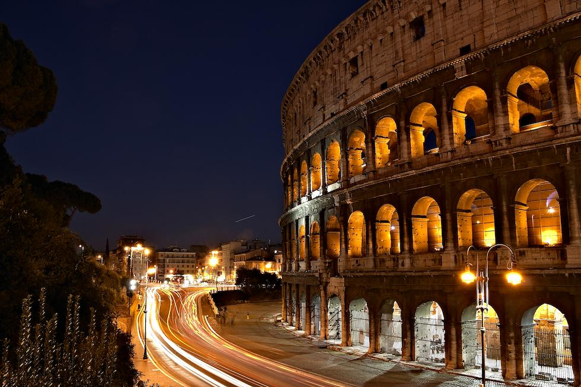
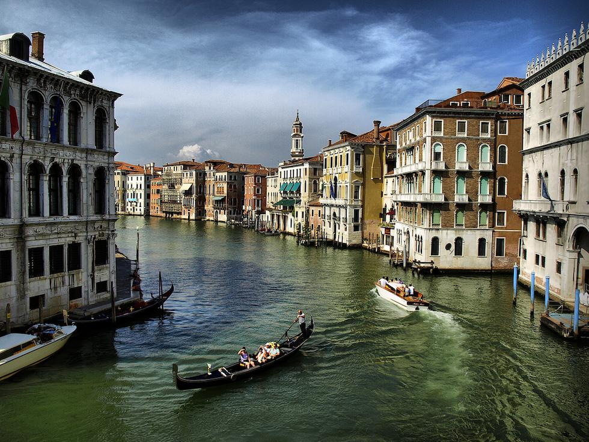
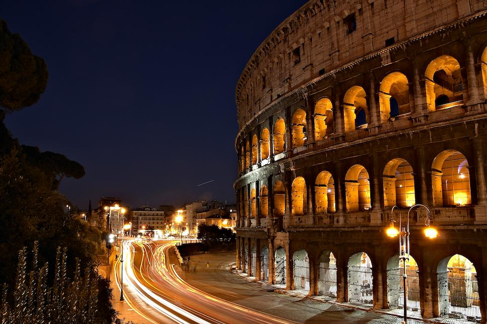
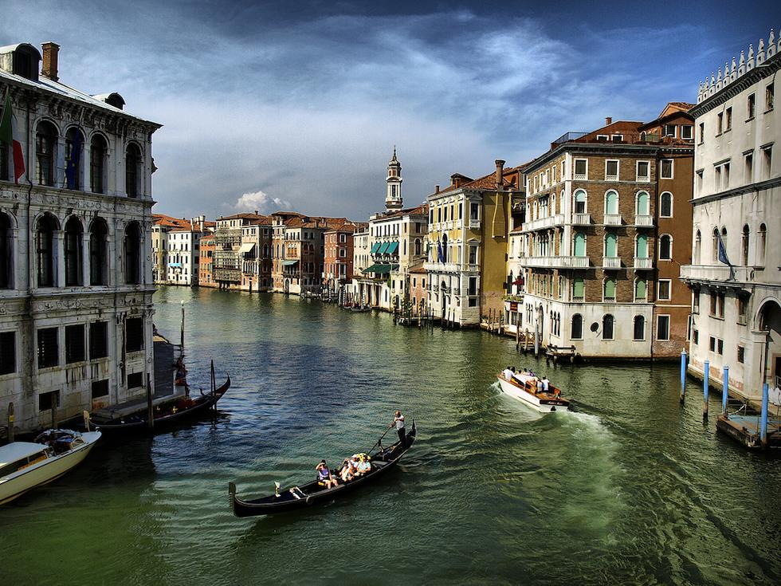

OUR CITIES
 



Discover the beauty of Italy
CINQUETERRE
Few places in Italy are as memorable as the Cinque Terre, a land and culture so unique that it has been protected as a national park and designated a UNESCO World Heritage Site. Perhaps what travelers like best is its almost complete lack of traditional must-see sights such as important artworks, churches, palaces, museums,sculptures and castles. Instead, the ambience and natural beauty are the attractions. Popular things to do include walking the breathtaking paths along the cliffs, pausing over gelato in a café surrounded by candy-colored houses, cooling off with a swim, and just absorbing the Old World charm.
ROME
A heady mix of haunting ruins, awe-inspiring art and vibrant street life, Italy’s hot-blooded capital is one of the world’s most romantic and inspiring cities.The result of 3000 years of ad hoc urban development, Rome's cityscape is an exhilarating spectacle. Ancient icons such as the Colosseum, Roman Forum and Pantheon recall the city’s golden age as caput mundi (capital of the world), while its many monumental basilicas testify to its historical role as seat of the Catholic Church. Lording it over the skyline, St Peter’s Basilica is the Vatican’s epic showpiece church, a towering masterpiece of Renaissance architecture.
VENICE
The romantic city of Venice is located in the Veneto region of Italy — one of the northernmost states. This ancient and historically important city was originally built on 100 small islands in the Adriatic Sea. Instead or roads, Venice relies on a series of waterways and canals. One of the most famous areas of the city is the world-renowned Grand Canal thoroughfare, which was a major centre of the Renaissance. Another unmistakable area is the central square in Venice, called the Piazza San Marco. This is where you’ll find a range of Byzantine mosaics, the Campanile bell and, of course, the stunning St. Mark’s Basilica.